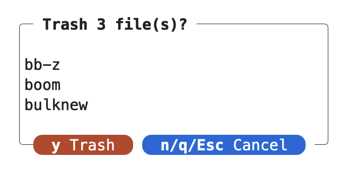
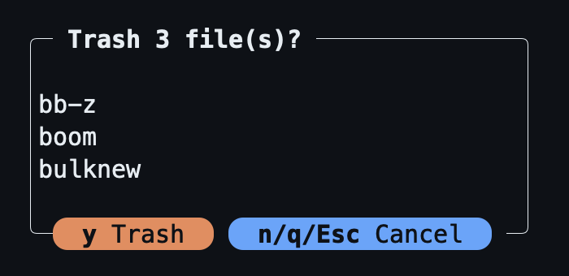

n3: nnn, with a fin3r finish.
nnn is a fast, lightweight terminal file manager. This fork keeps everything upstream does and adds a polished interface: rounded pills, floating popups, git status. Everything else, such as image and video previews, is a plugin, and nnn’s plugin system lets you write or customise your own.


What's new
Every change is a small, optional layer on top of upstream nnn. Switch any of it off with a flag or an environment variable.
Rounded pills
The hover highlight, status-line segments, the context number, the whole top-line path and every message are drawn as rounded pills with Powerline caps ( and ).
Turn them off with NNN_PILL=0.
Choice prompts
Prompts with options show one pill per choice. The default is filled, the key to press is capitalised and underlined, and a final Esc pill shows that any other key cancels. Details in FORK.md.
Floating windows
Help, file stats and confirmations open in rounded, titled popups that fit their content, with pill key hints along the bottom.
Safer deletes
Deleting one file ends the prompt with [y/n]. With a selection, the files are listed in a popup, relative to where you are, before you confirm with y.
Set NNN_TRASH=trash and x sends files to the macOS Trash while X stays permanent (rm -rf, no Trash).


Git status
A status column built into nnn, not a patch. -G turns it on, i toggles it live, and it only appears when the repo has changes. In $HOME it reads your bare ~/.dotfiles repo.
Readable timestamps
Compact eza style (-y), US style (-Y) or eza with the weekday for today's files (-Z). Press y to cycle them in a running session.
Recently changed files get a clock icon, and a triangle marks the hovered entry.
Quieter detail view
Hide directory sizes with -I and octal permissions with -m, or toggle them with I and M. Time and size columns have their own colors in NNN_FCOLORS.
Previews as plugins
The preview-tui plugin shows the preview in a split next to nnn: a native Ghostty, Rex, kitty or WezTerm split, an iTerm2 pane, or tmux.
Images render with chafa or viu, with an EXIF caption underneath. Camera RAW files show their embedded JPEG, and video plays through mpv.
zoxide jumping
The bb-z plugin: ;z jumps: an empty prompt opens the picker, anything else is the query. The directory you jump to is recorded with zoxide add.
Everyday conveniences
Quick Look the hovered file with ;; or Ctrl+Space. Copy names or full paths to the clipboard with C and Ctrl+B.
Sort keys now set rather than toggle, with tT for oldest first and tc to reset.
Keys
New keys this fork adds. Everything else works as upstream. The Section column is the heading each key has in the ? help.
| Key | Section | Action |
|---|---|---|
| i | Display | Toggle the git status column on/off (same as the -G option; reloads the directory) |
| M | Display | Toggle octal permissions in detail mode (same as -m) |
| y | Display | Cycle the detail timestamp format: ISO, eza (-y), US (-Y), eza + today (-Z), back to ISO |
| I | Display | Toggle directory sizes in detail mode (same as the -I option) |
| C / Ctrl+B | Files | Copy file name(s) / full path(s) of the selection, else the hovered entry, to the system clipboard (pbcopy; wl-copy/xclip/xsel elsewhere), newline separated. Ctrl+G (lowercase g; or Ctrl+Y where the tty delivers it) in any prompt (e.g. n) pastes the first copied entry. |
| ;; | Files | macOS Quick Look of the hovered file (qlmanage -p), raised in front of the terminal. First use may prompt for Automation permission (System Events). |
Changed behavior of existing keys
| Key | Change |
|---|---|
| t then t / s / e | Sets that sort key instead of toggling it off |
| t then T | Reverse time (oldest first); t then c resets to the default sort (see Sort keys) |
| p / v with nothing selected | Floating help; Enter opens the editor, q/Esc cancels |
| f popup, j n / k p | Listing highlight follows the hovered file |
Options
Flags and environment variables. Add the letters to NNN_OPTS to make them permanent.
| Setting | Effect |
|---|---|
-G | Query git and show the status column |
-y -Y -Z | Compact eza, US, or eza-with-weekday timestamps (the last one wins) |
-I -m | Hide directory sizes, hide octal permissions |
NNN_PILL=0 | Turn off the rounded caps |
NNN_MSGCOLOR | Message pill color, 0 to 255 |
NNN_YOUNG | Style for recent files: icon, reverse, pill or none |
NNN_HOVERMARK | Hovered entry marker: triangle, 1 for >, 0 for none |
NNN_IMGVIEWER | Image previews with chafa (default) or viu |
NNN_PREVIEWEXIF=0 | Hide the EXIF caption under image previews |
NNN_TRASH | Command used by x to trash instead of delete, for example trash |
Install
Build from source. The pills need a Nerd Font in your terminal; without O_NERD the interface falls back to plain characters.
# get the fork git clone -b amazebb https://github.com/amazebb/nnn.git cd nnn # build with Nerd Font support and install to ~/.local make deploy # install the plugins, including the previews rsync -a plugins/ ~/.config/nnn/plugins/
nnn -V should report 5.3-amazebb. The binary goes to ~/.local/bin/nnn with the previous copy kept as nnn.bak, so make sure that folder is on your PATH. Previews also need a supported terminal (Ghostty 1.3+, Rex, kitty, WezTerm, iTerm2 or tmux) and chafa or viu.
Manual
Every key, option and environment variable is in the nnn(1) man page, generated from nnn.1.